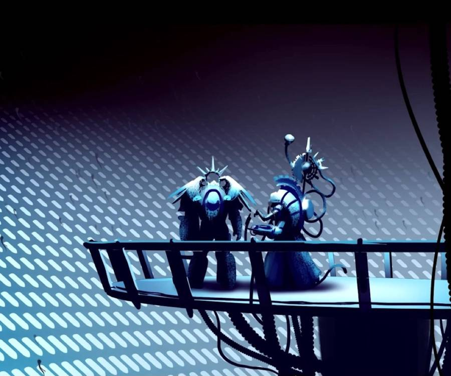
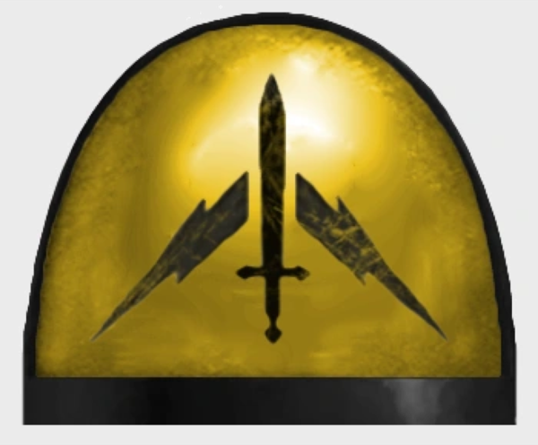
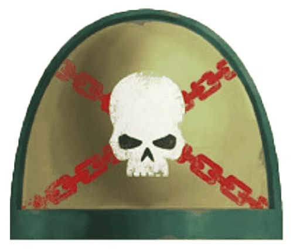
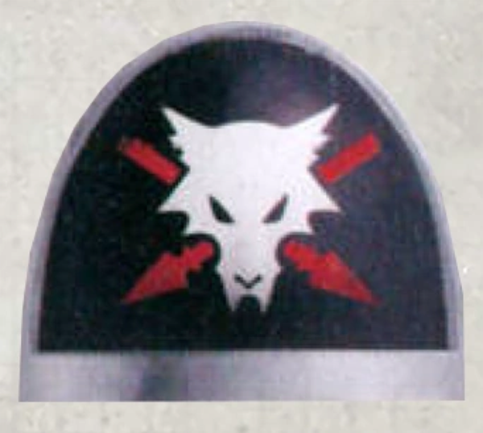

Ultima Founding
| Ultima Founding | |
|---|---|
| Founding of the Adeptus Astartes | |
 Roboute Guilliman and Archmagos Belisarius Cawl above the gestation vaults beneath Mars, in the last stages of the Primaris project | |
| Date | c. 999.M41 and the following decades[a] |
| Ordered by | Roboute Guilliman, Lord Commander of the Imperium |
| Created by | Archmagos Dominus Belisarius Cawl |
| Place | Vaults beneath Mars; the Ark Mechanicus Zar-Quaesitor |
| Warriors | Primaris Space Marines |
| Gene-lines | All nine loyal First Founding Legions |
| Result | Reinforcement of nearly every Chapter; many new Chapters; the Chapter limit broken |
| Preceded by | The Foundings of M32–M41 |
The Ultima Founding was the raising of new Space Marine Chapters and the reinforcement of the old with the Primaris Space Marines at the start of the Era Indomitus. It followed the Fall of Cadia and the opening of the Great Rift at the end of the 41st millennium, and was ordered by Roboute Guilliman on his return as Lord Commander of the Imperium. It is the largest Founding in the history of the Adeptus Astartes since the Second Founding.[1][2]
The warriors of the Ultima Founding were the product of a project begun ten thousand years earlier, when Guilliman set the Mechanicum the task of improving on the Emperor's Space Marines. Archmagos Belisarius Cawl laboured in secret for ten millennia to perfect them. The Primaris Space Marines are larger, stronger and faster than their predecessors and carry three additional gene-seed organs. They were drawn from the gene-seed of all nine loyal Legions, some of it taken within a few generations of the primarchs themselves.[1]
Some of the new warriors formed entirely new Chapters. The rest were sent with the Indomitus Crusade as the Unnumbered Sons, or Greyshields, to join the existing Chapters of their gene-line. The Founding renewed Chapters that had been bled almost to extinction, but it was not universally welcomed, and the question of whether mortal hands had the right to change the Emperor's work divided many Chapters for years.[2]
Background
[edit]The Primaris project
[edit]In the years after the Horus Heresy, Roboute Guilliman foresaw that the forces of Chaos would never cease their war against the Imperium, and that the Space Marines who survived the Heresy would one day be too few to resist them. Before his wounding by Fulgrim at the Battle of Thessala in 121.M31, he commissioned the Mechanicum to create a new generation of warriors who could stand against the threats to come. The task passed to Belisarius Cawl, then a young magos, who would spend the next ten thousand years upon it in vaults deep beneath Mars.[1]
Cawl's method was to take gene-seed from the oldest available sources, including warriors of Terra held in stasis since the Great Crusade, and to add to it organs of his own design. Among them were the belisarian furnace, which floods the body with stimulants in moments of extremity, the magnificat, which accelerates the growth of the other implants, and the sinew coils, which strengthen the body against injury. The resulting warriors were made in great numbers and kept in stasis, together with their armour and weapons, until they were needed. Cawl was careful to keep the project from the knowledge of the High Lords of Terra, the Inquisition and most of Mars itself.[1][b]
The Time of Ending
[edit]By the end of the 41st millennium the Chapters of the Adeptus Astartes were stretched thinner than ever. The 13th Black Crusade of Abaddon the Despoiler took Cadia, and the Great Rift opened across the galaxy. Warp storms swallowed whole sectors, Chapter worlds were besieged, and several Chapters were destroyed or lost. Guilliman, restored to life in 999.M41, judged that the time had come.[2]
Course
[edit]The awakening on Mars
[edit]Guilliman's passage to Terra in the Terran Crusade brought him to Mars, where Cawl revealed the completed project. The Primaris Space Marines were awakened from stasis in their thousands, already indoctrinated, each trained for a single battlefield role: some as Intercessors, some as Aggressors, and so on. They had the skills of veterans from the moment they woke, and a certain facility with machine spirits that reflected their Martian origin. They lacked only experience of the wider Imperium, and the flexibility that comes from years in the ranks of a Chapter.[1][2]
The Indomitus Crusade
[edit]The first warriors of the Ultima Founding accompanied the Indomitus Crusade when it left the Sol System. They travelled with elements of the Adeptus Custodes and the Sisters of Silence, and with Cawl himself aboard his Ark Mechanicus, the Zar-Quaesitor, from whose holds more Primaris warriors were woken as the crusade went on. Cawl drove his servitors at such a pace that his machines risked destruction.[2]
Wherever the crusade fleets reached a world of the Adeptus Astartes, a company of Greyshields bearing the heraldry of that Chapter left the fleet to join it. At Rynn's World the Crimson Fists received warriors whose gene-seed was closer to that of Rogal Dorn than their own, some of whom remembered seeing the primarch in life. Similar meetings followed on Chogoris, in Ultramar and at Baal, where the crusade arrived at the climax of the Devastation of Baal as the Blood Angels and their successors made what they believed would be their last stand.[2]
When the holds of the Zar-Quaesitor were empty, Cawl left the crusade to open other secret vaults, from which the Founding continued for many years.[2]
Resistance
[edit]Not every Chapter Master welcomed the new warriors. Some held that the Emperor's work should never have been altered by mortal hands, and that Cawl's creations could not be trusted. The Adeptus Custodes took a decisive part in overcoming these doubts. A Shield Host of the Custodes, the Emissaries Imperatus, accompanied the crusade and declared that the Primaris Space Marines were the will of the Emperor. Few Chapters were prepared to refuse what was presented to them as a gift from the Emperor's own hand. Even so, the integration of Primaris and older Space Marines, often called the Firstborn, has caused friction in many Chapters, and a small number of Chapters accepted the new warriors only in separate companies.[2]
New Chapters
[edit]
The Chapters raised entirely from Primaris Space Marines are the Chapters of the Ultima Founding in the strict sense. Many were given homeworlds along the edge of the Great Rift, the Imperium's new frontier, where they face constant incursions of daemons, raiders and xenos. Others inherited the empty fortress-monasteries of Chapters lost in the wars of the late 41st millennium. Some remained behind the Indomitus Crusade to secure its gains, building new Chapter worlds on reconquered planets.[2]
| Heraldry | Chapter | Gene-line |
|---|---|---|
 | Silver Templars | Ultramarines |
 | Castellans of the Rift | Ultramarines |
 | Rift Stalkers | Raven Guard |
 | Necropolis Hawks | Raven Guard |
 | Wolfspear | Space Wolves |
| Knights Cerulean, Fulminators, Praetors of Ultramar, Void Tridents | Ultramarines | |
| Angels of Defiance, Blades of Vengeance, Prime Absolvers, the Unnamed | Dark Angels | |
| Storm Reapers, Astral Bears | White Scars | |
| Sons of the Phoenix | Imperial Fists | |
| Blood Scythes, Knights of the Chalice, Dragons Ardent | Blood Angels | |
| Knights of Byzantium | Iron Hands | |
| Black Vipers, Covenant of Fire, Dark Krakens, Dragonspears, Iron Drakes | Salamanders | |
| Iron Ravens | Raven Guard |
The gene-line of several other Ultima Founding Chapters, among them the Umbral Knights, the Brazen Skulls and the Black Vultures, is not recorded in the archives available to the Administratum.[2]
Legacy
[edit]The Ultima Founding broke the old limit of roughly one thousand Chapters, and with it one of the principles of the Codex Astartes. Many Chapters now exceed their traditional strength, and new Chapters continue to be raised. Imperial commentators regard it as the event that, more than any other, allowed the Imperium to survive the first years of the Era Indomitus. It was said afterwards that in the darkest hours since the Heresy, the Indomitus Crusade and the warriors of the Ultima Founding gave mankind the hope to endure.[2]
Questions remain. It is not known whether Cawl succeeded in correcting the flaws of the older gene-lines, such as the Red Thirst of the Blood Angels, or whether the Primaris Space Marines are any more resistant to the corruption of Chaos. The Inquisition watches the new Chapters closely, and the first Primaris renegades have already been recorded.[1][2]
Timeline
[edit]The principal dated events of the Ultima Founding and of the Primaris project behind it.
| Date | Event | Theatre |
|---|---|---|
| c. 021.M31 | Roboute Guilliman orders the Mechanicum to create a new generation of warriors. | Macragge |
| c. 021–999.M41 | Belisarius Cawl works in secret on the Primaris project for ten thousand years. | Mars |
| 121.M31 | Guilliman is wounded by Fulgrim at Thessala and laid in stasis at Macragge. | Thessala |
| 999.M41 | The Thirteenth Black Crusade takes Cadia; Guilliman judges that the time for the Primaris has come. | Cadia |
| 999.M41 | The first Primaris Marines, the Awoken, are woken from stasis on Mars; the Ultima Founding begins. | Mars |
| 999.M41 | The Indomitus Crusade leaves the Sol System with Cawl's Ark Mechanicus Zar-Quaesitor. | Sol System |
| 999.M41 | The crusade arrives at Baal at the climax of the Devastation of Baal. | Baal |
| c. 012.M42 | The first phase of the crusade ends at the Battle of Raukos; the Unnumbered Sons are disbanded into new Chapters. | Raukos |
| M42 | Marneus Calgar is the first Firstborn to cross the Rubicon Primaris.[c] | Macragge |
| M42 | The Primaris Marines reinforce the Ultramarines and the other Chapters of the Plague Wars in Ultramar.[d] | Ultramar |
| M42 | Guilliman revises the Codex Astartes to set the Chapter at a thousand battle-brothers.[e] | Macragge |
| Era Indomitus | Primaris Chapters are given homeworlds along the edge of the Great Rift, the new front line.[f] | Great Rift |
See also
[edit]Notes
[edit]- ^ Dates of the Era Indomitus are provisional. The Logos Historica Verita has found that the variant Imperial calendars of the period disagree by up to a millennium.
- ^ Cawl's own notes claim that the work was carried out entirely according to the primarch's instructions. The Inquisition has questioned this, and records that Cawl added further modifications of which Guilliman was not told. The matter is sealed.
- ^ Date not recorded; placed in the early Era Indomitus.
- ^ Date not recorded; placed in the early Era Indomitus.
- ^ Date not recorded; placed in the early Era Indomitus.
- ^ Date not recorded; placed within the Era Indomitus.